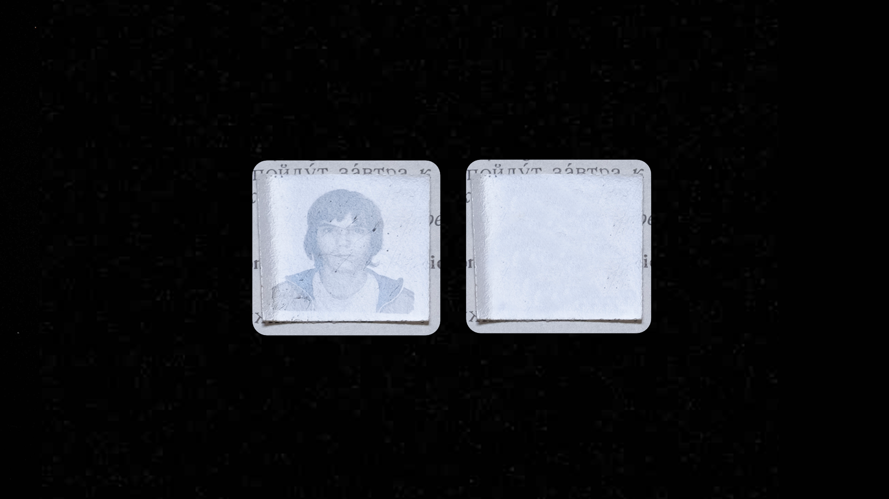

Juliana Zepka est une artiste-chercheuse franco-brésilienne. Elle vit et travaille entre Paris et Sens.
Son travail explore les dimensions matérielles, spectrales, spatio-temporelles et politiques du concept d’archive. Elle mène actuellement une thèse à Paris 8, à travers laquelle elle développe le concept d'« anarchive », qu’elle décrit comme une exploration artistique de nouvelles méthodologies de représentation, de mise en récit et de matérialisation des objets et lieux d’archives.
Elle intervient également sur demande dans la création de contenus visuels (graphisme, webdesign, vidéo) pour des artistes, institutions culturelles et associations.
Juliana Zepka est une artiste-chercheuse franco-brésilienne. Elle vit et travaille entre Sens et Paris. Son travail explore les dimensions matérielles, spectrales, spatio-temporelles et politiques du concept d’archive. Elle mène actuellement une thèse à Paris 8, à travers laquelle elle développe le concept d'« anarchive », qu’elle décrit comme une exploration artistique de nouvelles méthodologies de représentation, de mise en récit et de matérialisation des objets et lieux d’archives. Elle intervient également sur demande dans la création de contenus visuels (graphisme, webdesign, vidéo) pour des artistes, institutions culturelles et associations.

En grève
Soutien aux mouvements sociaux en cours,
aux lycéen·ne·s et étudiant·e·s,
aux personnels et chercheur·euse·s de l’éducation nationale,
aux travailleur·euse·s de tous les secteurs précaires,
aux victimes de violences policières et étatiques insupportables,
la lutte pour nos droits continue.
En grève
Soutien aux mouvements sociaux en cours,
aux lycéen·ne·s et étudiant·e·s,
aux personnels et chercheur·euse·s de l’éducation nationale,
aux travailleur·euse·s de tous les secteurs précaires,
aux victimes de violences policières et étatiques insupportables,
la lutte pour nos droits continue.
En grève
Soutien aux mouvements sociaux en cours,
aux lycéen·ne·s et étudiant·e·s,
aux personnels et chercheur·euse·s de l’éducation nationale,
aux travailleur·euse·s de tous les secteurs précaires,
aux victimes de violences policières et étatiques insupportables,
la lutte pour nos droits continue.
Juliana ZEPKA est une artiste-chercheuse franco-brésilienne diplômée en arts visuels (Université de Strasbourg et Sandberg Institute, Amsterdam). Elle vit et travaille entre Sens et Paris.
Son travail explore les dimensions matérielles, spectrales, spatio-temporelles et politiques du concept d’archive. Elle mène actuellement une thèse en arts plastiques et Photographie à Paris 8, à travers laquelle elle développe le concept d'« anarchive », qu’elle décrit comme une exploration artistique de nouvelles méthodologies de représentation, de mise en récit et de matérialisation des objets et lieux d’archives. Depuis 2022, son travail a été exposé au Kunstverein Freiburg (REGIONALE23), dans l’ancien palais de Justice d’Amsterdam, à TEMPEL, sur l’ancien site industriel Philips de Roermond et, plus récemment, à la Galerie Commune de Tourcoing et à l'UQAM en 2025 et 2026. Elle co- organise le séminaire Voir l’histoire ? Les images qui figurent le passé à l’Institut national d’histoire de l’art.
Elle intervient également sur demande dans la création de contenus visuels (graphisme, webdesign, vidéo) pour des artistes, institutions culturelles et associations.
{}
2023 – Polyphonies: AR Paris-Montréal, Galerie du CEDex, UQAM, Montréal (CA)
2023 – Linéaments: repenser la recherche en art, Galerie Commune, Tourcoing (FR)
2023 – DU 2023, Destination Unknown, ancien site Philips, Roermond (NL)
2022 – On the Brink of Remembering, REGIONALE 23, Kunstverein Freiburg (DE)
2022 – The Courtroom, Sandberg Graduation Show, Oude Rechtbank, Amsterdam (NL)
2020 – Project Space, Sandberg Institute, MC Slotervaart, Amsterdam (NL)
2020 – Text me, Espace d’art contemporain Cryogénie, Strasbourg (FR)
2026 – "À travers la grille d'un regard, d'une attention, d'un langage", dans le cadre de la journée d'étude Archive|s et Création|s, la malterie arts visuels
2026 – Fictions anarchivistiques, dans le cadre de la journée d'étude Au risque de nos mondes : arpentages indisciplinés, Université Paris 8
2026 – Artist Talk, UQAM, Salle 6180 Montréal
2025 – "L’image comme geste et comme objet", dans le cadre de la journée d'étude de l'exposition Linéaments : repenser la recherche en art Galerie Commune, Tourcoing
2026 – Développement du site du cabinet Perrault Architecture
2025 – Vidéo de l'exposition monographique consacrée à Sophie Ristelhueber par la Galerie Poggi, Paris Photo
2024 – Refonte de site internet pour la foire d'art contemporain Asia NOW
2024 – Refonte de site internet pour Équipe Créative.
2023 – Refonte du site internet de la Galerie Orbis Pictus pour The Farm Paris
2022 – RHEIN, captation et montage vidéo, étalonnage, Équipe Créative + Les Lumières
The Overview Project – Annette Hoffmann,
Metaphern des Gedächtnisses : «On the Brink of Remembering», [presse], Kulturjoker, Dec.2022-Jan.2023, p18, 2022
The Overview Project – Felizitas Diering, [presse], Bz Basel, 30.Dec.2022, p15
2026 – Polyphonies : AR Paris-Montréal, CEDex, Montréal (CA)
2025 – Linéaments : repenser la recherche en art, Galerie Commune, Tourcoing (FR)
2025 – Horizons contemporains de la photographie expérimentale, Journée d'étude (co-organisation), Maison de la recherche, Université Paris 8
{}